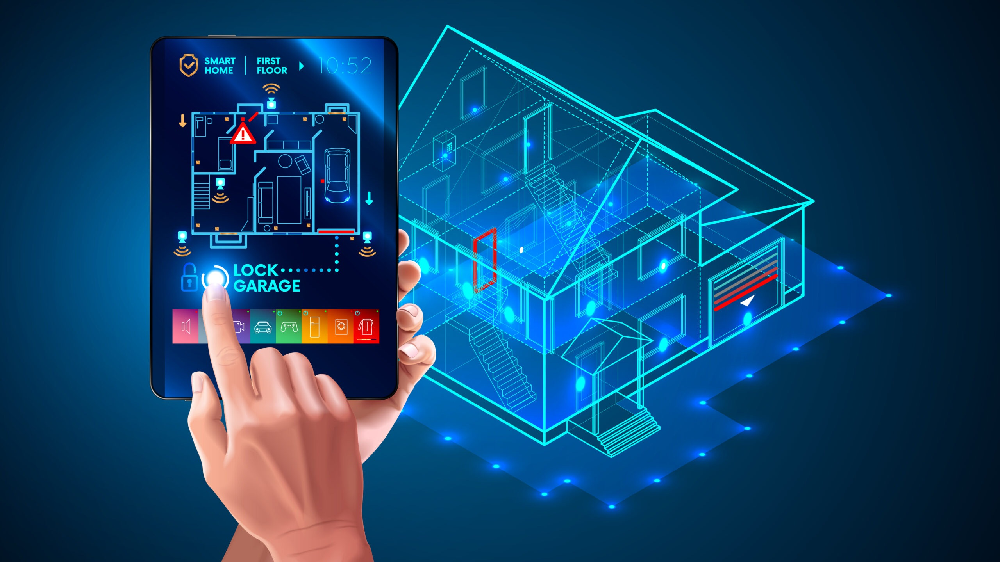

Что такое умный дом?
Умный дом — это система, которая объединяет бытовые устройства и электронику, позволяя управлять ими дистанционно и автоматически через интернет. Это может включать управление освещением, температурой, безопасностью и бытовой техникой.
Функции умного дома:
- Управление освещением: автоматическое включение и выключение света.
- Умные термостаты: поддержание комфортной температуры.
- Системы безопасности: камеры, датчики движения и умные замки.
- Домашние ассистенты: голосовые помощники, такие как Alexa и Google Assistant.
Преимущества:
- Экономия энергии.
- Удобство управления.
- Повышение безопасности дома.